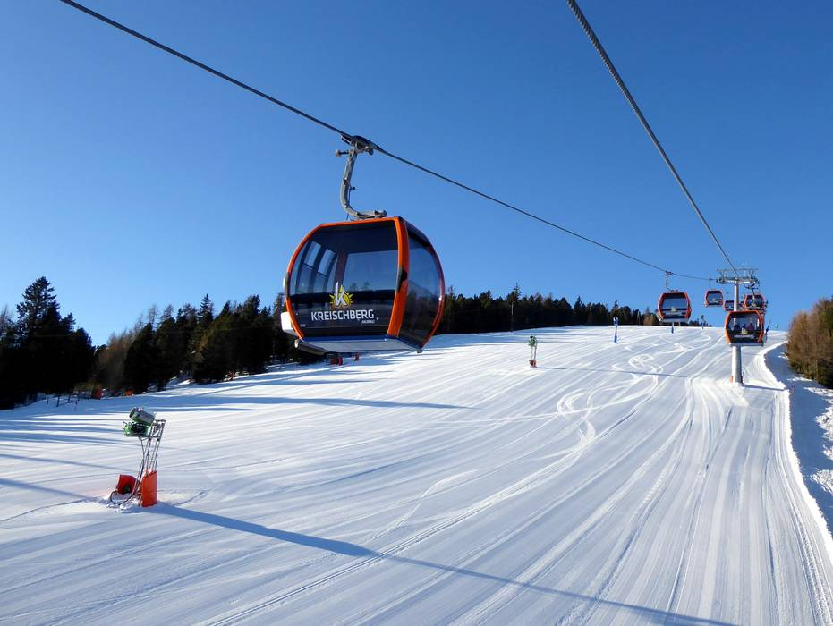
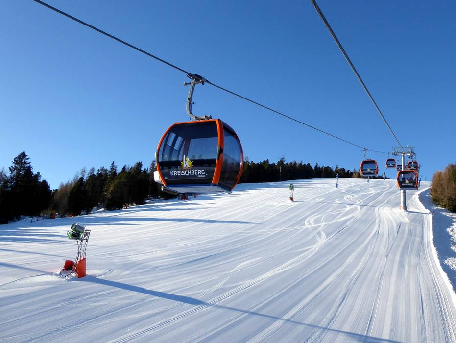
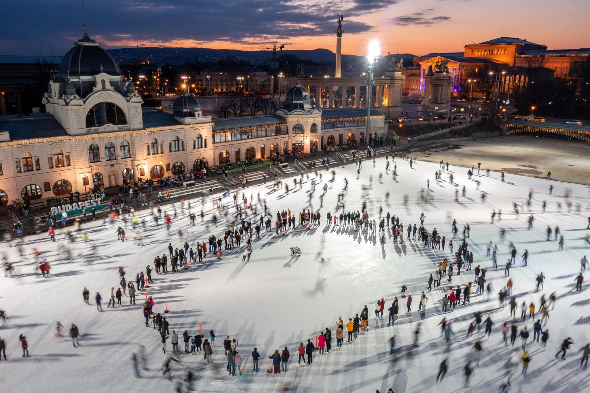
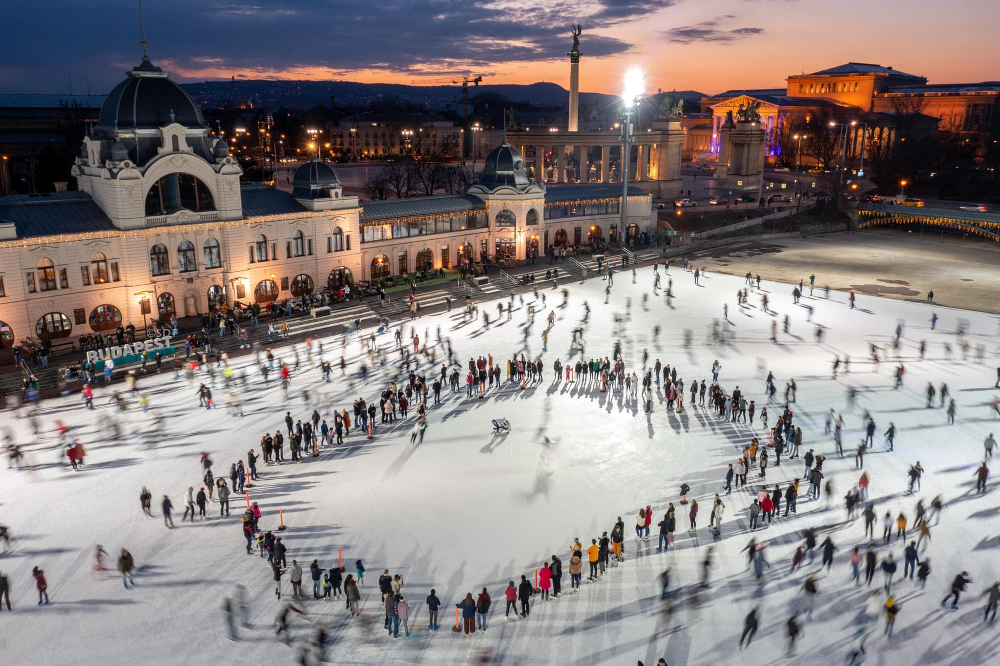

 



Diákszervezetünk egyik legnagyobb eseménye a sítábor, melyet minden évben Kreischbergben tartunk. A tábor alatt az utolsó előtti napon mindig megrendezésre kerül a síverseny. Természetesen nem csak a versenyzőket várjuk táborunkba. Minden ügyességi szintnek lehetősége van saját csoportjával síelni, így megfelelő tempoban lehet gyakorolni a síelést, bármilyen kapkodás nélkül. Minden táborban nyújtunk síoktatást, ahol a technikát segítenek csiszolni, profi sítanáraink.
Ha felkeltettük az érdeklődésedet, mindenképp jelentkezz az idei sítáborba!


A korcsolyázásoknak nincsen konkrét előre kijelőlt időpontja. Télen nagyjából minden második héten
van egy HUSI-s korcsolyázás általában a műjégpályán.
Ilyenkor minden alkalommal előre megbeszéljük és szavazzunk, hogy melyik időpont lenne a legjobb.
Erre jelentkezés nélkül bármilyen corvinusos diák résztvehet.
Mivel sokaknak van korcsolyája a diák szövetkezetből, ezért (természetesen a megfelelő méretben)
kölcsön szoktunk adni, ha valakinek nincs. Amikor nagy tömeg lenne a műjégpályán, mert hétvégén ez
sajnos sűrűn előfodrul, néhányan a kőbányai jégpályához mennek, ami kisebb, de ugyanakkor sokkal
kevesebben vannak.
Rengeteg csodálatos helyre tudsz eljutni a HUSI-val. Minden évben tavasszal és ősszel is szervezünk
kirándulásokat Magyarország legszebb erdeibe. Már többször megmásztuk a Kékes-tetőt, valamint
Dobogókőn is többször megcsodáltuk a kilátást. Amikor a páratartalom magas és hajnalban a harmat és
a zúzmara ráfagy a fákra, az ember úgy érezheti, mintha csodaországba kerülne.
Tavasszal a
leolvadó hó miatt, nagyon csúszossá válnak az ösvények, ezért a túrabakancs kötelező a
kirándulásokon.


Mivel hamarosan nyit a Corvinus legújabb campusa, ami egyben egy sportközpont is lesz, a HUSI sem maradhat le. Célunk felállítani, és edzésben tartani egy egyetemi atlétika csapatot. Az atlétika sokféle ágai közül lehetőségünk lesz az alábbi sportágak edzésére: